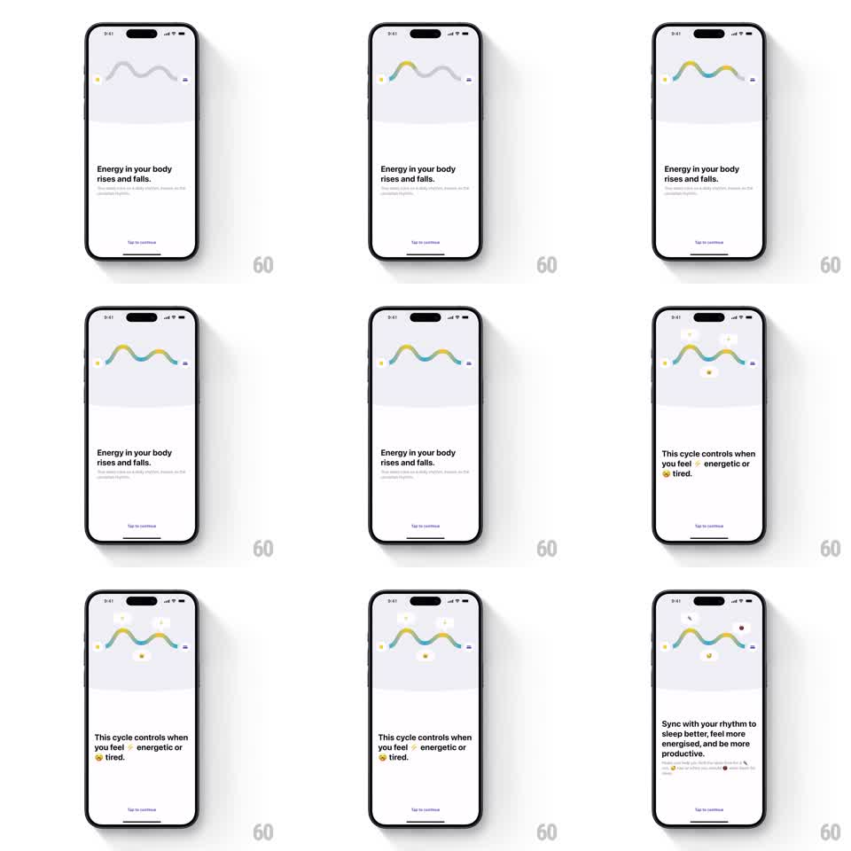

Media
Frame-by-frame

Rebuild this interaction 1:1: Peaks' circadian onboarding - a wave graph in the top panel morphs from a faint outline into a glowing gradient energy curve as copy pages advance, with emoji markers popping along the wave.

Rebuild this interaction 1:1: Peaks' circadian onboarding - a wave graph in the top panel morphs from a faint outline into a glowing gradient energy curve as copy pages advance, with emoji markers popping along the wave. ## Integration Integration: stack-agnostic spec - springs given as stiffness/damping, timed motions as duration + curve; map every value to your framework and animation library of choice. ## Scene Light lavender-gray top panel holding a smooth two-hump wave line with small square endpoint markers; white bottom area with centered copy and a "Tap to continue" link. Page 1: "Energy in your body rises and falls." Page 2: "This cycle controls when you feel (lightning) energetic or (sleepy) tired." Page 3: "Sync with your rhythm to sleep better, feel more energized, and be more productive." ## Motion spec Pattern: tap-advanced onboarding where a wave graph progressively comes alive. - Initial state: the wave is a thin gray outline at 30% opacity. - Page 1 (tap): the wave draws itself left to right (stroke trim, 900ms, ease-in-out) and its gradient fills in (yellow at peaks -> teal-green at troughs, opacity to 100%, 600ms). - Page 2 (tap): emoji markers pop onto the curve at its peaks and troughs (lightning at peaks, sleepy face at troughs; scale 0 -> 1.2 -> 1, spring ~340/13, staggered 120ms left to right) with soft glow dots behind them. - Page 3 (tap): the wave settles into a gentle idle undulation (the whole path breathes, amplitude +-6%, 4s loop) while the copy crossfades (250ms per page change, old text up and out, new text up and in). - Copy changes are the only bottom-area motion; "Tap to continue" pulses subtly (opacity 0.6 -> 1, 2s). ## Calibration - The wave's shape (two humps, endpoints marked) never changes - only its color, glow, and ornamentation evolve. - Emoji land exactly on the curve's local maxima and minima. ## Reduced motion Wave states crossfade (300ms) per tap; no draw-on, no pop springs. ## Don't miss - The top panel and bottom copy are independent layers: panel animates, bottom swaps. - Keep the endpoint square markers visible in every state - they frame the wave.